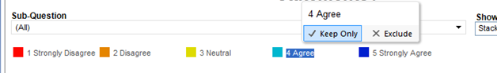

Charts
The reporting tool utilizes a variety of visuals to show the data and results of each survey item and topic. The charts consist of several sections, each with different functions that allow the chart to be customized.
Download:
Located below the chart are tools to allow for a chart to be downloaded. On the top left, under the "Download" are tools that allow for different types of downloading. In the middle of this section is an icon that will allow you to download the chart. This function will allow you to download the chart as an image or PDF file. The next icon under "Download" allows you to refresh the chart, clearing any filters or selections that may have been applied.
Chart Type, Legend:
The top portion of each chart contains tools for changing the format of the chart, seeing which filters are applied, and the applicable color code legend.
Each chart can be displayed as either a graph or data table. The "Show Graph/Table:" tool allows you to select the graph or table display by selecting from a drop down list.
The "Filter" bar tells which demographic filters, located at the top of the page, are currently applied to the chart. This section will mirror the "Current Filters" bar that appears below the filters when one is applied.
To the left of the "Graph/Table" selections is the color legend for the current chart if applicable. The legend begins with the lowest value, and indicates the color that represents each possible value.
The chart can be filtered by keeping or excluding certain values. Clicking on the desired value will bring up a tool box with the name and number of the selected value. At the bottom of this tool box are options for "Keep Only," and "Exclude." Selecting "Keep Only" will remove all other values shown on the chart, and display the chart for the one value selected. Selecting "Exclude" will remove that value from the chart entirely. To refresh the chart, click the refresh icon in the download bar above the chart. These selections will remain intact when the chart is downloaded.

Axes:
Each chart's axes correspond to the question item on the vertical axis, and the academic year from which the data was taken on the top horizontal axis. The bottom horizontal axis shows the percentage scale of total respondents that each category is comprises.
Similar to the legend, each question item or academic year can be selected to show certain information or options. When selected, all other questions or academic years will be faded out, and a dialog box will appear above the mouse cursor. The dialog box will show the selected question, and the "Keep Only" and "Exclude" options. These options work the same as the legend, and will either remove all other question items (keep only) or remove the selected question item from the chart (exclude). Use the refresh icon at the top of the chart to revert back to the default view.
Chart Data:
The body of the chart may be comprised of different types of graphs such as a stacked bar, or a regular bar graph, or raw data if displayed as a data table. Each item and value category is selectable within the graph by clicking on it. Once selected, a dialog box will appear above the cursor. This box will display the selected question, academic year, percentage, and count associated with that value. These selections do not offer the "Keep Only" and "Exclude" options. Values can be filtered out by selecting the desired option from the chart's legend.
Created with the Personal Edition of HelpNDoc: Easy EPub and documentation editor